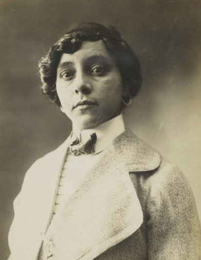
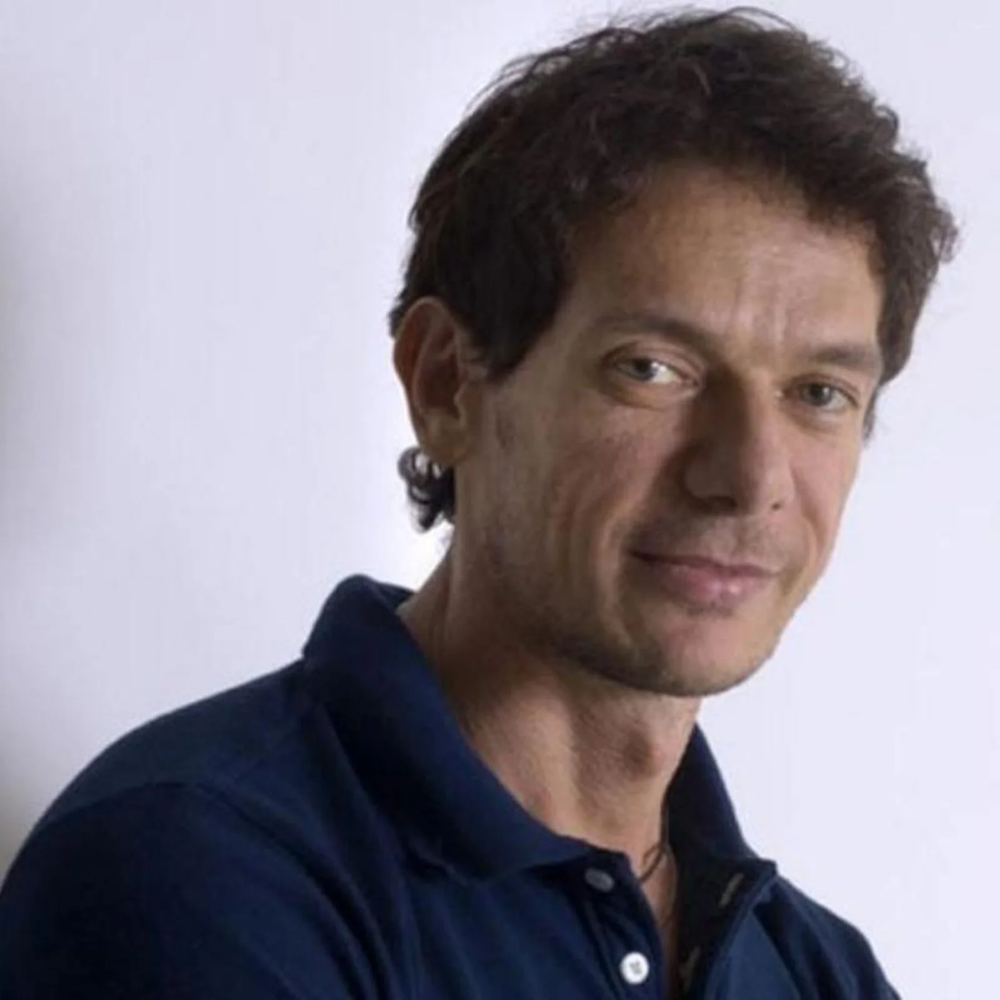

Biografias
A

Arinda
Arinda nasceu em 1883 no Brasil, filha de Maria Perpétua da Cruz Sobral com João José Sobral. Foi formada pela Escola Normal e posteriormente ingressou na Arquitetura.
Logo começou a participar dos quadros de docentes de redes públicas e permaneceu nelas até a morte, se sabe que ela chegou até a ser diretora de uma das instituições que ministrou, e seus processos eram também compartilhados com sua irmã Palmyra da Cruz Sobral que também passou a vida como professora pública. Em 1993 se casou com João Henrique Belham e adotou o nome de casada, Arinda Sobral Belham, seu marido também era trabalhador público, já tendo uma trajetória no Tesouro Nacional. Sabe-se que tiveram uma filha, mas que infelizmente morreu muito jovem, tendo somente 6 anos na época. Arinda e sua família nunca foram de origem nobre, sempre estiveram em uma classe socioeconômica baixa, algo característico dos inúmeros cargos públicos que tiveram e mantiveram por anos de suas vidas. Ela foi anunciada em 1911 como a primeira mulher a se formar no curso de arquitetura na Escola Nacional de Belas Artes. Arinda na época era bem elogiada em jornais pelo seu ótimo desempenho escolar, algo que se era comprovado por conta dos testes escolares que eram publicados. Arinda acompanhou de perto as reformas que a escola teve que no século enfrentava muitos problemas envolvendo verba, e ao contrário de muitas outras a Escola de Belas Artes valorizava muito o posto de Sobral em ser a primeira mulher brasileira ao se formar em arquitetura, pois a Escola na época tinha como intuito se vista como moderna. Arinda não se expandiu muito, continuo realmente do ramo da licenciatura, mas ainda sim deixou seu legado marcado em um de seus trabalhos, a Capela São Silvestre, instalada no caminho para o Corcovado, na região do Parque Nacional da Tijuca, que chamou a atenção por conta da enorme imagem do Cristo Redentor, e pontuando a capela foi construída muito antes do Cristo Redentor. A aprovação do projeto para a capela foi feita no dia 24/12/1911 no dia 31/12 do mesmo ano, houve a festa de ano novo e a comemoração do santo homenageado Santo São Silvestre. Ambas comemorações foram presenciadas pelo presidente da época, Marechal Hermes da Fonseca. Mas a festa não recebeu somente Marechal de figura importante, também estavam presentes dois arquitetos importantíssimos para a história da arquitetura, urbanismo e engenharia, como Souza Aguiar e Ernesto Araujo Vianna. A comemoração pela aprovação do projeto se estendeu até 20/01/1912 e ali se iniciou a obra que terminou em 1918. A capela pode ser visitada nos dias atuais, mas temos que lembrar que ela passou por reformas ao longo dos anos, mas também precisamos ressaltar que o estilo da capela se mantivera. E atualmente ela é usada para missas semanais. Outro ponto importante, a capela não é considerada autoral de Arinda. Mas os dados levantam inúmeras reflexões sobre Arinda e seu legado, pois ao analisarmos alguns dados, até uns tempos as mulheres dominaram o curso, com a maioria das instituições forneciam a pesquisa de que 64% da mulheres se expressavam mais em seus trabalhos e o dado também representava a quantidade de mulheres na área. O fato é que Arinda abriu essa oportunidade, se tornando a primeira mulher a finalizar e atuar no curso, Sobral deve ser lembrada eternamente por abrir essas portas e inspirar em sua época várias mulheres a fazerem o mesmo. Por que Arinda foi esquecida:Com base nas pesquisas da Historiadora Camila, o esquecimento de Arinda da Cruz, tendo como base em seu contexto de condições da afirmação, é uma expressão do modo patriarcal de reprodução da memória. Dentro da história da arquitetura, foram estabelecidas que as obras geniais se refletiam das ideias do gênio masculino de ser excepcional. A recuperação e divulgação que agora se é feita, gera oportunidades simbólicas de reconhecimento às mulheres e derivadas de minorias que tiveram participação ativa no processo de legitimação da arte que engloba a arquitetura.

André Festugato Piva
André nasceu em 1968 no Brasil, na cidade de Caxias do Sul, localizada no estado do Rio Grande do Sul, filho do advogado Luís Carlos e da professora Beatriz Fusgato, Piva se formou em 1990 como arquiteto na Universidade Federal do Rio de Janeiro (UFRJ).
Em 1995 inaugurou seu próprio escritório de arquitetura. Nos primeiros anos de escritório Piva se limitou a projetos voltados ao atendimento comercial, não em suas próprias criações. Foi em 2000 quando começou a construir sua casa que ganhou destaque, a partir desse ponto ele começou projetos nacionais e internacionais concentrados no ramo residencial, sua se construiu ao planejar casas que refletiam a cultura e história do país e região de seus contratantes e si próprio, trazendo sensibilidade e capacidade de traduzir sentimentos humanos na arte arquitetônica, tendo como principal admiradora Daniela Alvarenga, que o conheceu no início de sua trajetória, quando Alvarenga e o próprio terminavam a faculdade, segundo seu relato, ele foi uma parceiro indispensável no desenvolvimento de seu sonhado consultório-boutique, o primeiro existente, e com passar dos anos ele também projetava seu apartamento. Ainda em 1995 André iniciou uma relacionamento com o estilista Carlos Alberto Tufvesson, que ao passar se tornou titular da Coordenadoria Especial da Diversidade Sexual do Rio de Janeiro. Os dois passaram 16 anos justiça em busca do direito de casarem, e com a luta de ambos as portas para o casamento homoafetivo foi começando a se abrir, foi em 2011 que eles conseguiram o direito de casar, sua festa de casamento foi feita no Museu de Arte do Rio de Janeiro, mas ainda sim o STF negou uma certidão oficial de união, e assim eles entram novamente em briga com a justiça, foi em 2013 que eles de fato conseguiram o certificado de união. André não ficou necessariamente conhecido por uma obra mas por todas que fez, como relatado acima o arquiteto tinha tanta sensibilidade e conhecimento histórico que tornou seus projetos reflexos de seus contratantes, os trazendo algo além do projeto, os trouxe conforto e o aconchego de ver a si próprio no que tanto desejavam. Mas infelizmente aos seus 52 anos, Piva veio a falecer no dia 05/08/2020 por conta do agravamento de uma leucemia. Por que André foi esquecido: Piva provavelmente foi esquecido com os anos, devido a desvalorização de seu estilo de modelar projetos, mas não só por isso, o descaso com sua história, tendo como base o atual contexto que o mundo se encontra, foi por um provável preconceito a visão de sua orientação sexual, André era abertamente assumido homossexual, e defendia com fervor a causa LGBTQIAPN+, entre outras causa envolvendo pessoas inferiorizadas.